От дачной окраины до современного Выборгского района
Начать прогулку ↓96 лет • Легендарная читательница библиотеки • Хранительница истории Старо-Парголовского проспекта
Именно благодаря энергии и энтузиазму Галины Всеволодовны 10 лет назад нашей библиотеке было присвоено имя академика Д. С. Лихачева. Ее очерки — это бесценные свидетельства об утраченном деревянном Лесном и атмосфере старого проспекта.
«Исчез единственный в своем особом облике проспект – сам-то он остался, но совсем потерялось и стёрлось его прежнее лицо, неповторимое и пленительное...»Читать воспоминания →
Автор «Как человек становится проспектом» • Исследователь истории Выборгской стороны
В документальной повести Роман Всеволодов рассказывает об эволюции проспекта Тореза и его превращении из дачной окраины в современную магистраль. Это живой взгляд человека, чья личная судьба и становление тесно переплелись с историей района.
«Судьбу и даже характер человека во многом определяет месторасположение его дома...»
Начало маршрута. Исторический перекресток Спасской дачи, ставший в перестроечные годы центром кооперативных ларьков и духа свободы.
Особняк купца Котлова в стиле модерн-замка. По легенде, здесь бывал Ф. И. Шаляпин, а в Блокаду работала библиотека («Огонёк в Лесном»).
Старинный особняк бывшего коменданта, где жил известный меценат. Ныне здесь располагается подразделение ГИБДД.
Культовая советская гостиница арх. В. Белова. На первом этаже работал киоск с импортной жвачкой и зарубежной прессой.
Дореволюционное Общество попечения о бедных детях и пожилых женщинах Лесного. Нынче на месте здания стоит жилой дом.
Уголок Сосновки, где в 1840 году состоялась бескровная, но роковая дуэль М. Ю. Лермонтова с сыном французского посла Э. де Барантом.
Эпицентр азарта и скорости, где каждые выходные проходили гонки, а трибуны кипели от эмоций ленинградских болельщиков.
Лучший стрелковый комплекс Военно-охотничьего общества в СССР, где проводились чемпионаты страны и городские кубки.
Необычный домик правнука фельдмаршала Кутузова, породивший множество таинственных городских легенд в советские годы.
Железобетонный особняк с восточной башенкой на Поклонной горе лекаря императорской семьи, укрывавшего здесь революционеров в 1905 году.
Потяните ползунок в центре вправо или влево, чтобы сравнить исторический облик особняка с его современным состоянием:
Интерактивные 3D-экспонаты и подлинные артефакты, найденные на проспекте Тореза:
Подлинные свидетельства, анкеты, рукописи и стихи жителей и читателей о жизни на проспекте Тореза:
Поэтический квест о любимом районе и парке Сосновка.
Личные воспоминания и рукописные краеведческие очерки ожизни на проспекте Тореза.
9 подлинных документов
Живые мнения, отзывы и воспоминания жителей Выборгского района.
Проспект Тореза и Выборгская сторона в произведениях художников:
Архивные почтовые карточки с видами Старо-Парголовского проспекта и проспекта Мориса Тореза
Издания из фонда нашей библиотеки об истории Выборгского района и проспекта Тореза:
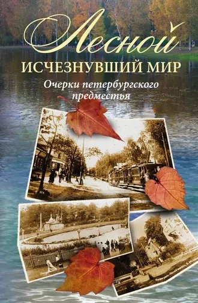
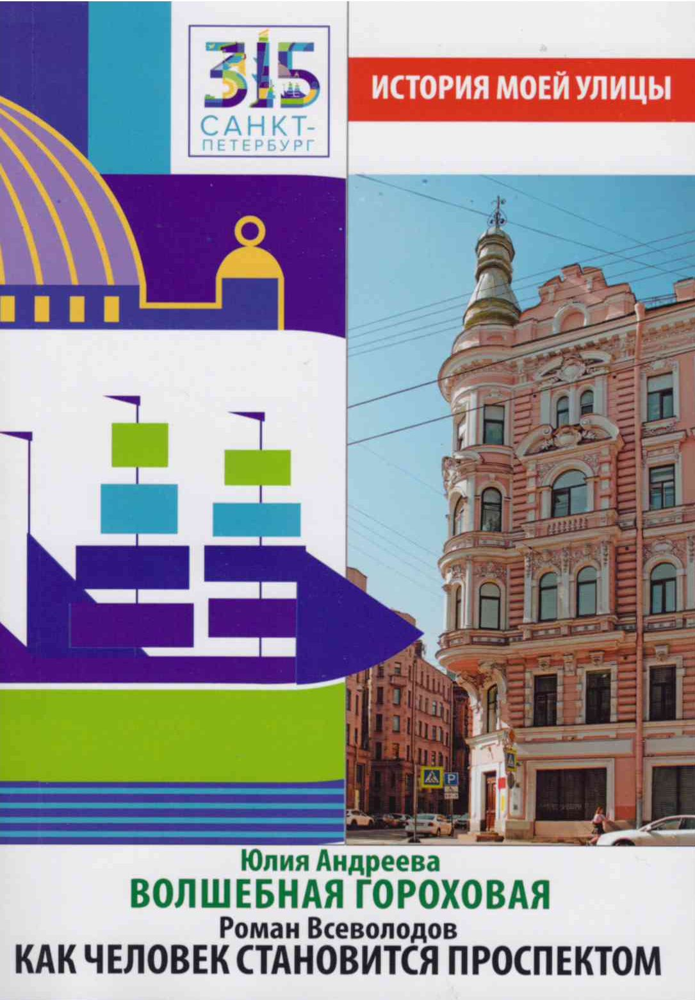
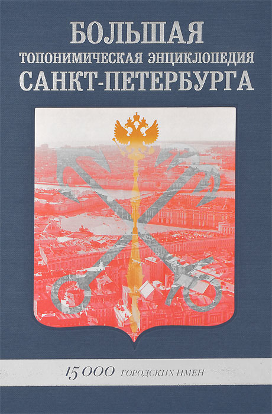
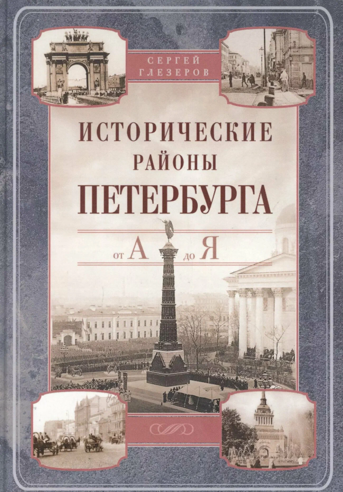
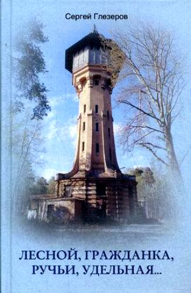
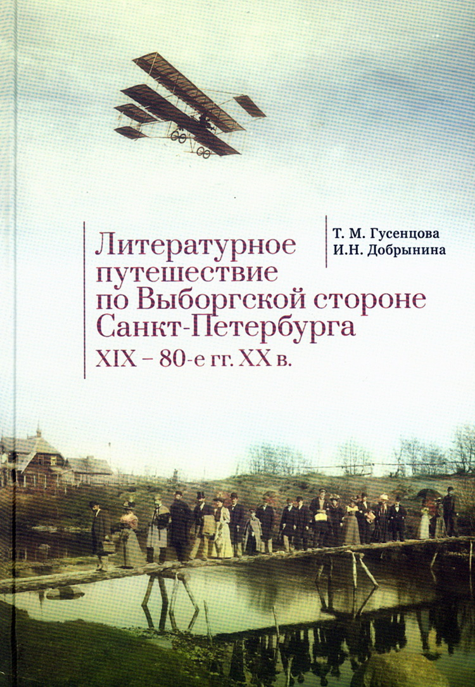
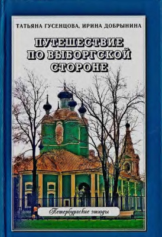
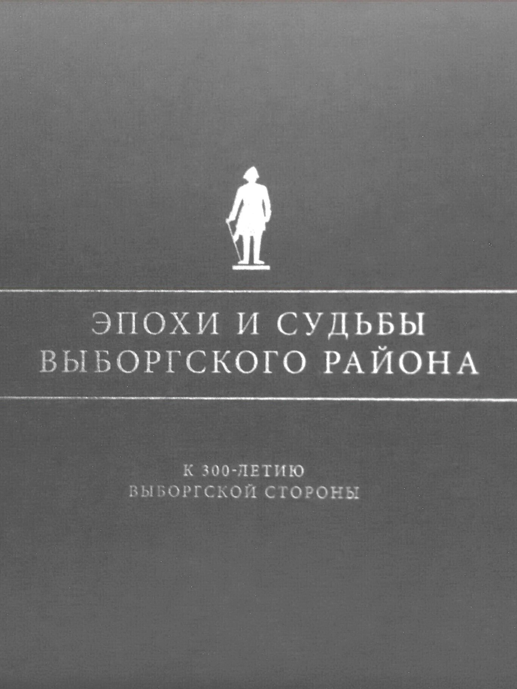
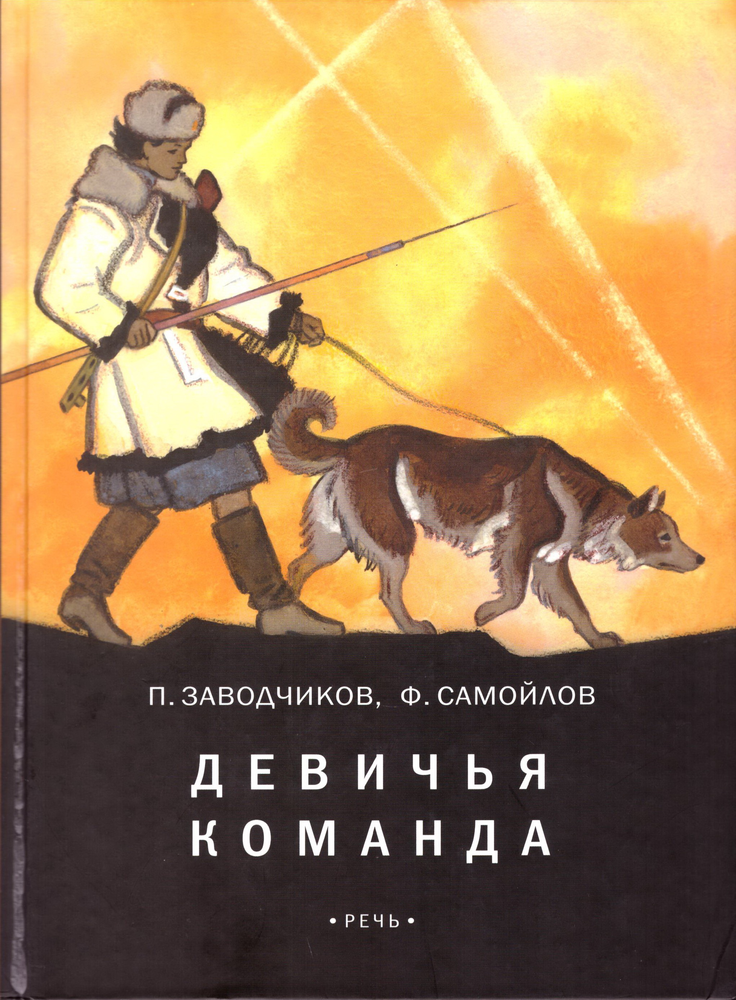
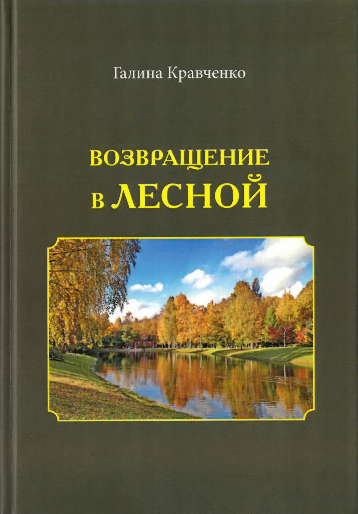
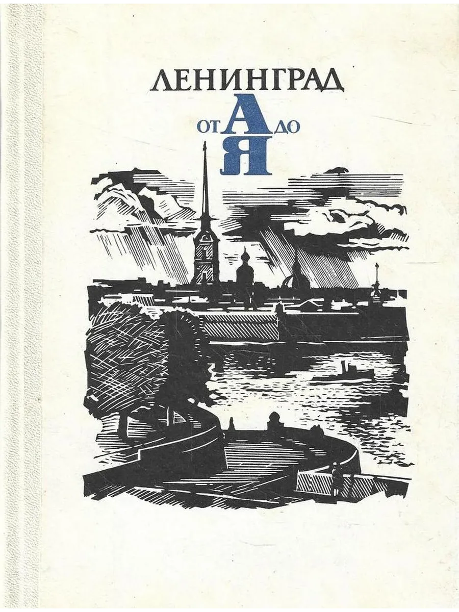
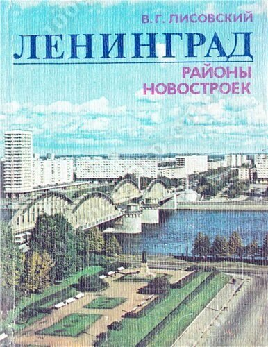
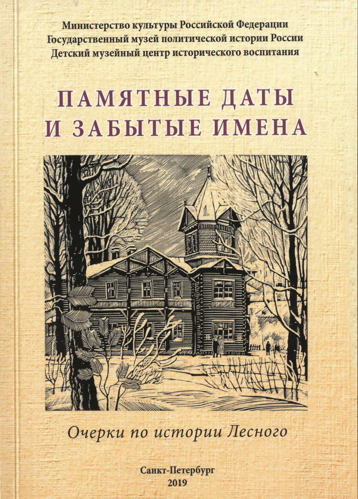
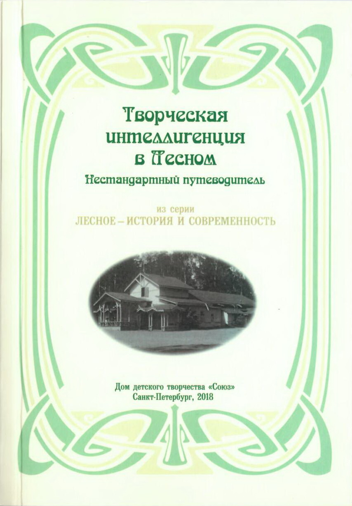
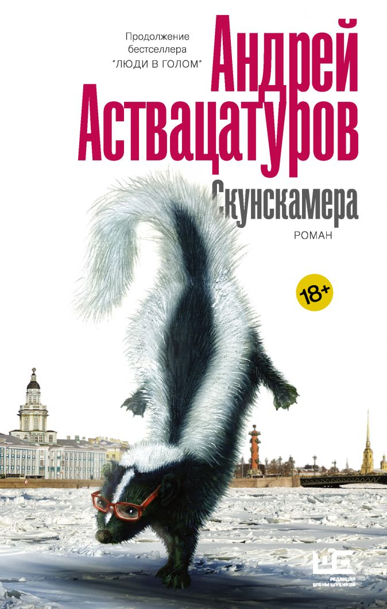
Архитектура Санкт-Петербурга: дома, истории архитектеров и хроника застройки.
Старые фотографии города на интерактивной карте с привязкой к эпохам.
Портал об истории, культуре и краеведении северной столицы.
Сообщество в VK, посвященное истории района, событиям и людям.
Поделитесь своими воспоминаниями или фотографиями проспекта Тореза!